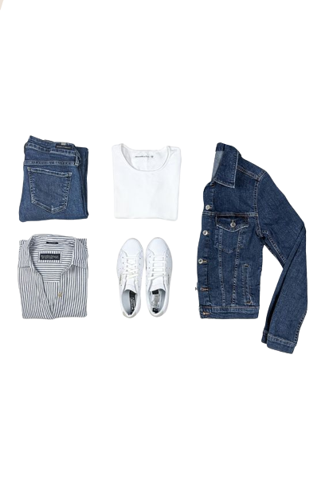
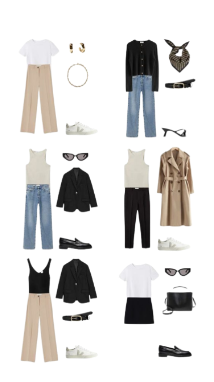

How to travel light and still look good?
A lot of the time, packing light really just means “wearing boring clothing”. And it’s NO FUN. Nobody wants to go on vacation wearing practical walking shoes and plain t-shirts. But nobody wants to lug around a giant suitcase (and pay insane baggage fees) either.
Fortunately, with the right minimalist travel wardrobe, you can have your cake and eat it too. As a recovering overpacker turned carry-on-only traveler, I promise you — you CAN travel light and still look good. You just have to learn to pack smart, too.
STEP 1: Create a capsule wardrobe
Basically, you want to bring really versatile clothing that you can mix and match. The idea is that most items can be worn with any combination of other pieces – to create a TON of different outfits from a tiny amount of clothing.
TIPS FOR CREATING THE PERFECT CAPSULE WARDROBE:
1. Think separate pieces not outfits - Consider every item individually and make sure that it’s versatile enough to pair with many of your other pieces, and still look good.
2. If you’re only going to wear it once, don’t bring it. - Suitcase space is precious (and limited)! Don’t waste it.
3. Bring neutrals, but throw in some color.
STEP 2: Choose small ,light-weight luggage
-do not allow yourself to pack a bunch of unnecessary crap "just in case". Pick the smallest bag you can, and then stuff it to the gills.
Here are my top recommendations for travel bags depending on your case: click here
STEP 3: Space-saving tips
1. Roll, don´t fold
2. Learn to play bag tetris
3. Choose the right accessories - girl, you do not need heels!

